Introductory analysis of daily streamflows with hydroTSM
Mauricio Zambrano-Bigiarini1
version 0.3, 27-Dec-2025
Source:vignettes/hydroTSM_Daily_Q_Vignette-knitr.Rmd
hydroTSM_Daily_Q_Vignette-knitr.RmdCitation
If you use hydroTSM, please cite it as Zambrano-Bigiarini (2024):
Zambrano-Bigiarini, Mauricio (2024). hydroTSM: Time Series Management and Analysis for Hydrological Modelling. R package version 0.7-0. URL:https://cran.r-project.org/package=hydroTSM. doi:10.5281/zenodo.839565.
Installation
Installing the latest stable version (from CRAN):
install.packages("hydroTSM")Alternatively, you can also try the under-development version (from Github):
if (!require(devtools)) install.packages("devtools")
library(devtools)
install_github("hzambran/hydroTSM")Setting up the environment
Loading the hydroTSM package, which contains data and functions used in this analysis:
## Loading required package: zoo##
## Attaching package: 'zoo'## The following objects are masked from 'package:base':
##
## as.Date, as.Date.numericLoading daily streamflow data at the station Cauquenes en el Arrayan, Maule Region, Chile, from 01/Jan/1979 to 31/Dec/2020.
data(Cauquenes7336001)Selecting only a 30-years time slice for the analysis
x <- window(Cauquenes7336001, start="1981-01-01", end="2010-12-31")Dates of the daily values of ‘x’:
dates <- time(x)Amount of years in ‘x’ (needed for computations):
## [1] 30The Cauquenes7336001 dataset stores 5 variables (in this
order): P, [mm], Tmx, [degC], Tmn, [deg C], PET, [mm], Qobs, [mm], Qobs,
[m3/s]. For the rest of the analysis, only streamflows (Q, [mm]) and
precipitations (P, [mm]) will be selected:
P <- x[, 1]
Q <- x[, 5]Basic exploratory data analysis (EDA)
- Summary statistics of streamflows:
smry(Q)## Index Q
## Min. 1981-01-01 0.0014
## 1st Qu. 1988-07-02 0.0583
## Median 1996-01-01 0.1708
## Mean 1996-01-01 1.2220
## 3rd Qu. 2003-07-02 0.8375
## Max. 2010-12-31 118.5000
## IQR <NA> 0.7791
## sd <NA> 4.1753
## cv <NA> 3.4180
## Skewness <NA> 11.2980
## Kurtosis <NA> 190.5046
## NA's <NA> 274.0000
## n <NA> 10957.0000- Amount of days with information (not NA) per year:
dwi(Q)## 1981 1982 1983 1984 1985 1986 1987 1988 1989 1990 1991 1992 1993 1994 1995 1996
## 363 364 363 365 365 364 365 366 365 365 359 326 365 365 297 366
## 1997 1998 1999 2000 2001 2002 2003 2004 2005 2006 2007 2008 2009 2010
## 365 337 365 366 365 365 365 366 365 348 365 305 318 365- Amount of days with information (not NA) per month per year:
dwi(Q, out.unit="mpy")## Jan Feb Mar Apr May Jun Jul Aug Sep Oct Nov Dec
## 1981 31 28 31 30 31 29 30 31 30 31 30 31
## 1982 31 28 31 30 31 30 31 31 29 31 30 31
## 1983 31 28 31 30 31 29 30 31 30 31 30 31
## 1984 31 29 31 30 31 30 30 31 30 31 30 31
## 1985 31 28 31 30 31 30 31 31 30 31 30 31
## 1986 31 28 31 30 31 29 31 31 30 31 30 31
## 1987 31 28 31 30 31 30 31 31 30 31 30 31
## 1988 31 29 31 30 31 30 31 31 30 31 30 31
## 1989 31 28 31 30 31 30 31 31 30 31 30 31
## 1990 31 28 31 30 31 30 31 31 30 31 30 31
## 1991 31 26 31 30 31 30 27 31 30 31 30 31
## 1992 31 29 31 30 31 30 31 13 8 31 30 31
## 1993 31 28 31 30 31 30 31 31 30 31 30 31
## 1994 31 28 31 30 31 30 31 31 30 31 30 31
## 1995 31 28 25 15 20 5 20 31 30 31 30 31
## 1996 31 29 31 30 31 30 31 31 30 31 30 31
## 1997 31 28 31 30 31 30 31 31 30 31 30 31
## 1998 31 28 31 30 31 30 31 31 30 30 19 15
## 1999 31 28 31 30 31 30 31 31 30 31 30 31
## 2000 31 29 31 30 31 30 31 31 30 31 30 31
## 2001 31 28 31 30 31 30 31 31 30 31 30 31
## 2002 31 28 31 30 31 30 31 31 30 31 30 31
## 2003 31 28 31 30 31 30 31 31 30 31 30 31
## 2004 31 29 31 30 31 30 31 31 30 31 30 31
## 2005 31 28 31 30 31 30 31 31 30 31 30 31
## 2006 31 28 31 30 31 30 31 14 30 31 30 31
## 2007 31 28 31 30 31 30 31 31 30 31 30 31
## 2008 31 29 13 0 18 30 31 31 30 31 30 31
## 2009 31 28 31 30 31 30 24 0 21 31 30 31
## 2010 31 28 31 30 31 30 31 31 30 31 30 31- Since v0.7-0, hydroTSM allows the computation of the
amount/percentage of days with missing data in different temporal scales
(e.g., hourly, weekly, seasonal). By default, the
cmvfunction returns the percentage of missing values in the desired temporal scale using decimal values:
( pmd <- cmv(Q, tscale="monthly") )## 1981-01 1981-02 1981-03 1981-04 1981-05 1981-06 1981-07 1981-08 1981-09 1981-10
## 0.000 0.000 0.000 0.000 0.000 0.033 0.032 0.000 0.000 0.000
## 1981-11 1981-12 1982-01 1982-02 1982-03 1982-04 1982-05 1982-06 1982-07 1982-08
## 0.000 0.000 0.000 0.000 0.000 0.000 0.000 0.000 0.000 0.000
## [ reached 'max' / getOption("max.print") -- omitted 340 entries ]Identifying months with more than 10 percent of missing data:
## [1] "1991-07" "1992-08" "1992-09" "1995-03" "1995-04" "1995-05" "1995-06"
## [8] "1995-07" "1998-11" "1998-12" "2006-08" "2008-03" "2008-04" "2008-05"
## [15] "2009-07" "2009-08" "2009-09"- Computation of monthly values only when the percentage of NAs in each month is lower than a user-defined percentage (10% in this example).
## Daily to monthly, only for months with less than 10% of missing values
(m2 <- daily2monthly(Q, FUN=mean, na.rm=TRUE, na.rm.max=0.1))## 1981-01-01 1981-02-01 1981-03-01 1981-04-01 1981-05-01 1981-06-01 1981-07-01
## 0.06963541 0.04992439 0.03557262 0.09975684 6.70602042 2.87502617 2.29693512
## 1981-08-01 1981-09-01 1981-10-01 1981-11-01 1981-12-01 1982-01-01 1982-02-01
## 1.72374858 1.75745744 0.35827986 0.18224559 0.08523987 0.05131148 0.04476578
## 1982-03-01 1982-04-01 1982-05-01 1982-06-01 1982-07-01 1982-08-01
## 0.03753045 0.04709608 3.75221201 8.93496883 7.40797474 4.60248712
## [ reached 'max' / getOption("max.print") -- omitted 340 entries ]- Basic exploratory figures:
Using the hydroplot function, which (by default) plots 9 different graphs: 3 ts plots, 3 boxplots and 3 histograms summarizing ‘x’. For this example, only daily and monthly plots are produced, and only data starting on 01-Jan-1987 are plotted.
hydroplot(Q, var.type="Flow", main="at Cauquenes en el Arrayan",
pfreq = "dm", from="2000-01-01")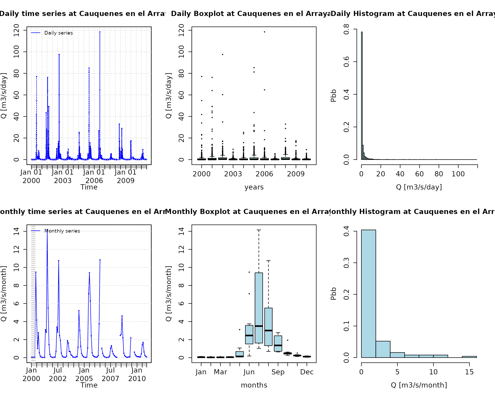
Plotting P and Q for the full time period of both time series:
plot_pq(p=P, q=Q)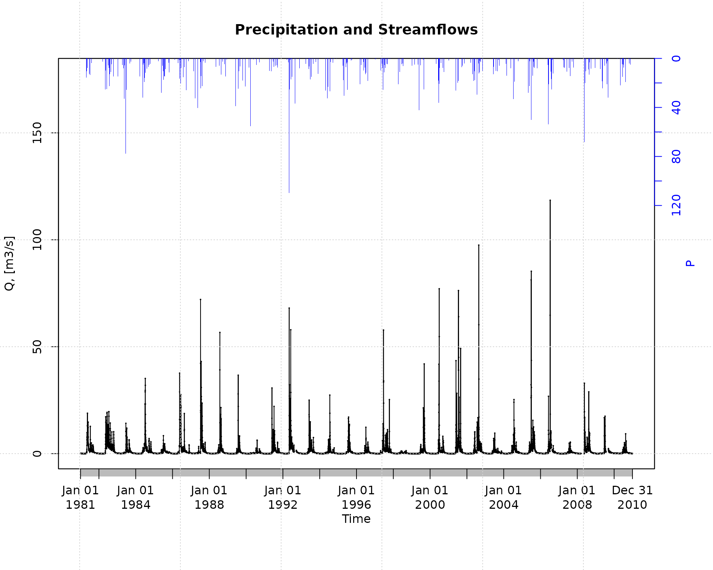
Plotting precipitation and streamflows only for a specific time period, from April to December 2000:
plot_pq(p=P, q=Q, from="2000-04-01", to="2000-12-31")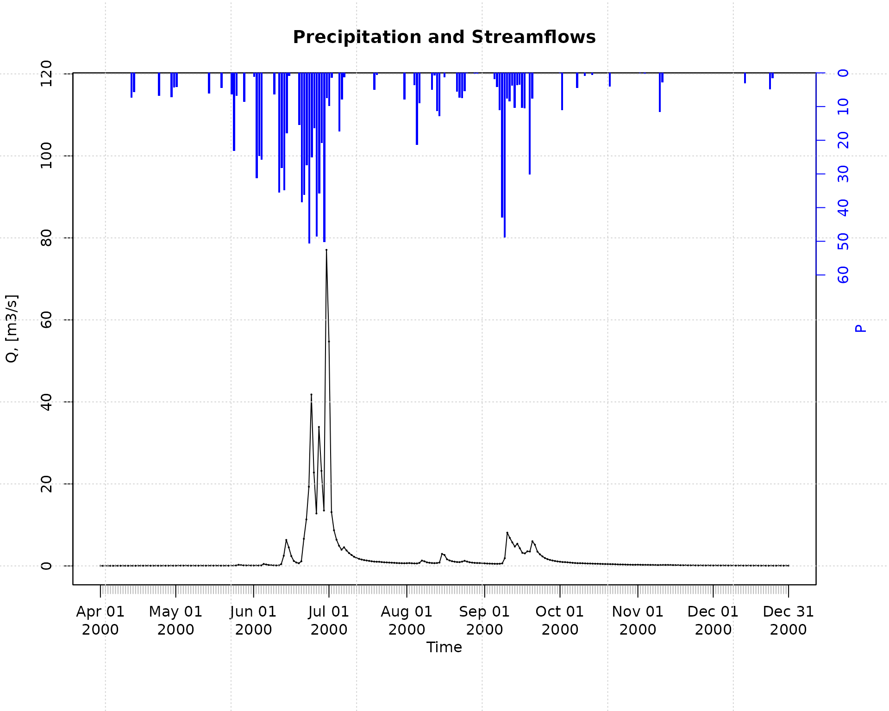
Plotting monthly values of precipitation and streamflows for the full time period of both time series:
plot_pq(p=P, q=Q, ptype="monthly")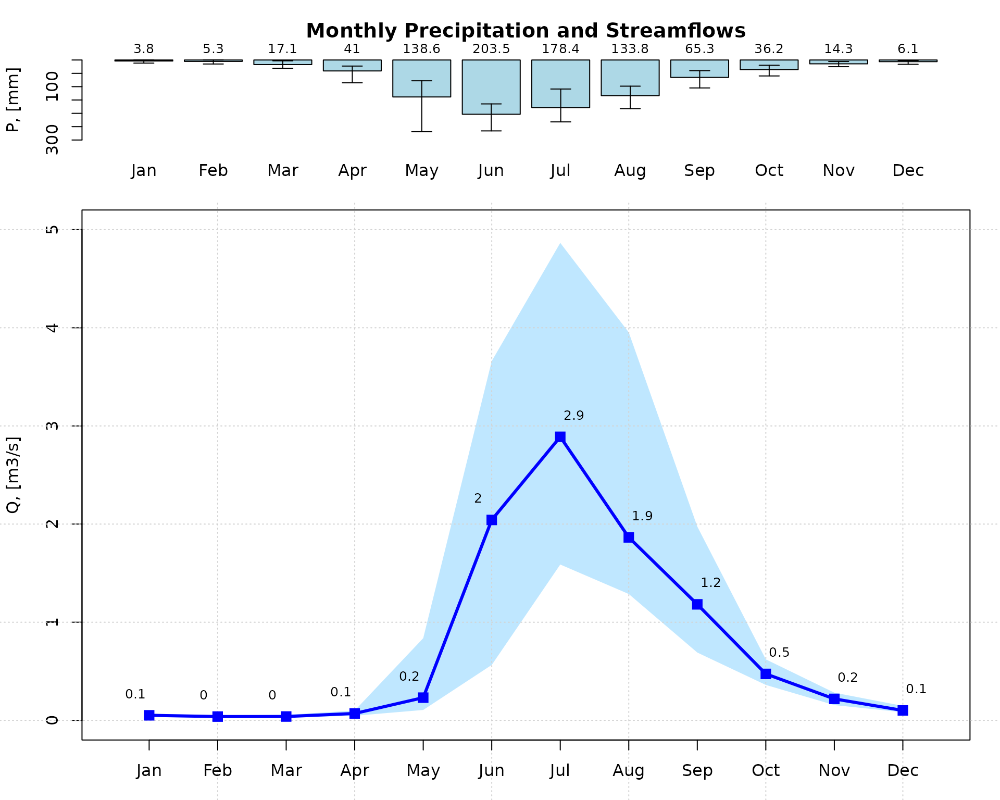
Plotting monthly values of precipitation and streamflows for the full time period of both time series, but using a hydrologic year starting on April:
plot_pq(p=P, q=Q, ptype="monthly", start.month=4)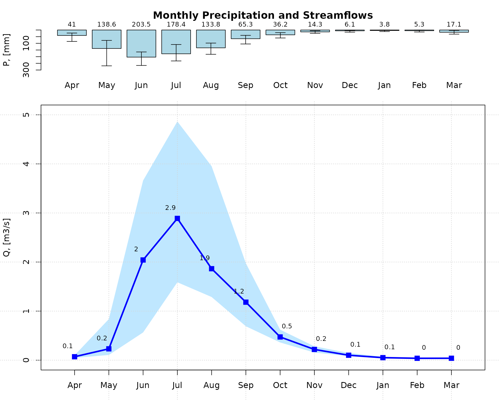
Selecting only a six-year time period for streamflows and then plotting a calendar heatmap (six years maximum) to visually identify dry, normal and wet days:
q <- window(Q, start="2005-01-01", end="2010-12-31")
calendarHeatmap(q)## Warning in classInt::classIntervals(temp, n = length(col), dataPrecision =
## cuts.dec, : var has missing values, omitted in finding classes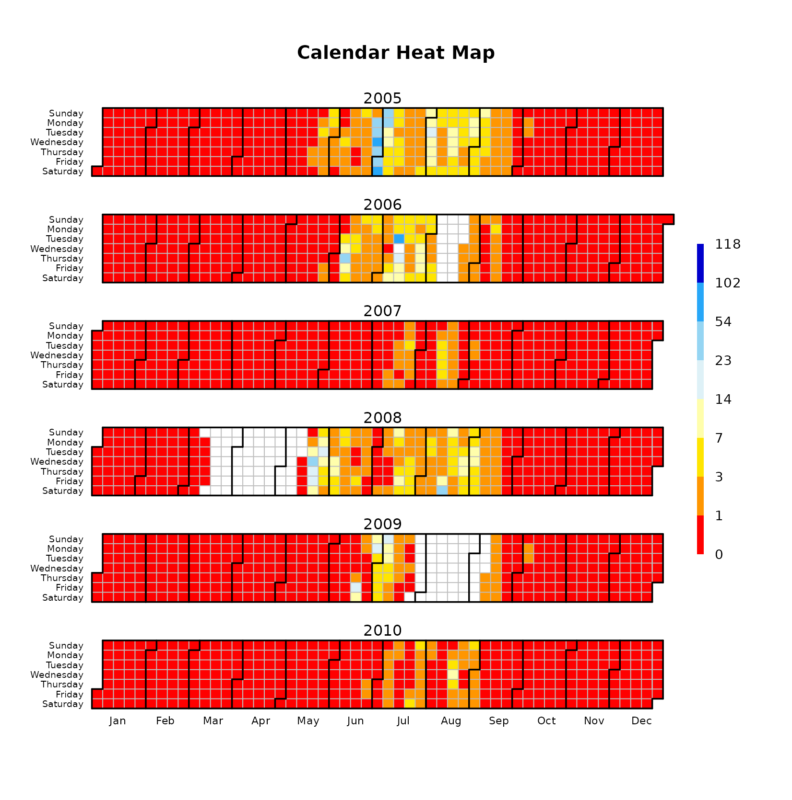
This figure allows to easily identify periods with missing data (e.g., Apr/2008 and Aug/2009). For each month, this figure is read from top to bottom. For example, January 1st 2007 was Monday, January 31th 2007 was Wednesday and October 1st 2010 was Friday.
Flow duration curve (FDC)
Flow duration curve of the 30-year daily streamflow data using
logarithmic scale for the y axis (i.e., to put focus on the
low flows):
fdc2 <- fdc(Q)Please note that log="y" was not provided as an argument
to fdc because it is the default value used in the
function.
Flow duration curve of the 30-year daily streamflow data using
logarithmic scale for the x axis (i.e., to put focus on the
high flows):
fdc3 <- fdc(Q, log="x")Traditional flow duration curve of the 30-year daily streamflow data:
fdc1 <- fdc(Q, log="", thr.pos="topright")Baseflow
Since v0.7-0, hydroTSM allows the computation of baseflow using the filter proposed by Arnold and Allen (1999), which is based on earlier work by Lyne and Hollick (1979).
This first exmaple illustrates the basic usage of the
baseflow function for computing and plotting the baseflow
for the full time period of a given time series of streamflows:
baseflow(Q) The previous code did not run because the streamflow time series has
some missing values. You might fill in the missing values using the
technique that you like the most and then call this function again. For
this example, we will use one of the two built-in techniques already
incorporated in the baseflow function the missing data,
i.e., na.fill="spline:
baseflow(Q, na.fill="spline") 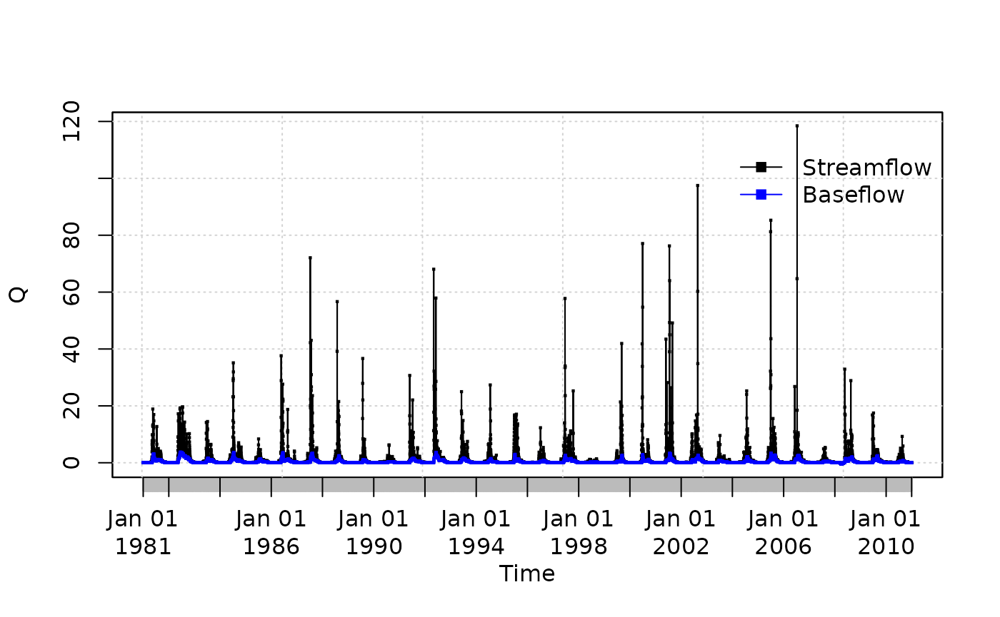
## 1981-01-01 1981-01-02 1981-01-03 1981-01-04 1981-01-05 1981-01-06 1981-01-07
## 0.04583222 0.04595585 0.04629648 0.04675769 0.04722086 0.04762892 0.04797386
## 1981-01-08 1981-01-09 1981-01-10 1981-01-11 1981-01-12 1981-01-13 1981-01-14
## 0.04824942 0.04845012 0.04857058 0.04848719 0.04724127 0.04586267 0.04435630
## 1981-01-15 1981-01-16 1981-01-17 1981-01-18 1981-01-19 1981-01-20
## 0.04294380 0.04202268 0.04169691 0.04166566 0.04166566 0.04166566
## [ reached 'max' / getOption("max.print") -- omitted 10937 entries ]Now, we will compute and plot the daily baseflow (i.e., the value obtained after the thir pass of the filter) for the full time period:
baseflow(Q, na.fill="spline", plot=TRUE)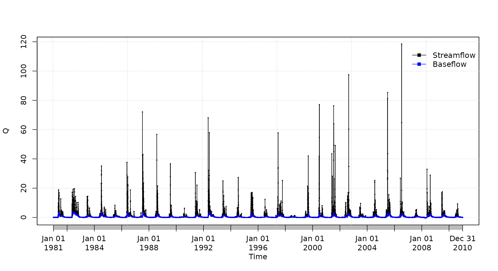
## 1981-01-01 1981-01-02 1981-01-03 1981-01-04 1981-01-05 1981-01-06 1981-01-07
## 0.04583222 0.04595585 0.04629648 0.04675769 0.04722086 0.04762892 0.04797386
## 1981-01-08 1981-01-09 1981-01-10 1981-01-11 1981-01-12 1981-01-13 1981-01-14
## 0.04824942 0.04845012 0.04857058 0.04848719 0.04724127 0.04586267 0.04435630
## 1981-01-15 1981-01-16 1981-01-17 1981-01-18 1981-01-19 1981-01-20
## 0.04294380 0.04202268 0.04169691 0.04166566 0.04166566 0.04166566
## [ reached 'max' / getOption("max.print") -- omitted 10937 entries ]You might also want to compute and plot the daily baseflow for a specific time period. For this example, from April to December 2000:
baseflow(Q, na.fill="spline", from="2000-04-01", to="2000-12-31")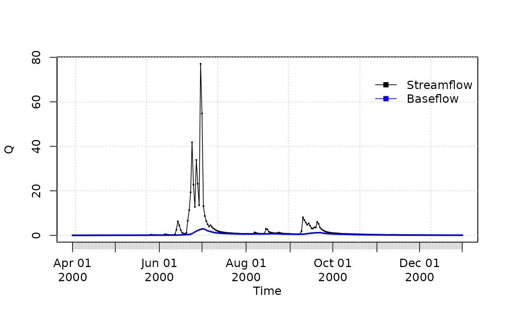
## 2000-04-01 2000-04-02 2000-04-03 2000-04-04 2000-04-05 2000-04-06 2000-04-07
## 0.01055530 0.01058421 0.01066581 0.01079262 0.01096092 0.01117236 0.01143301
## 2000-04-08 2000-04-09 2000-04-10 2000-04-11 2000-04-12 2000-04-13 2000-04-14
## 0.01174777 0.01212483 0.01257104 0.01307664 0.01362143 0.01419277 0.01478636
## 2000-04-15 2000-04-16 2000-04-17 2000-04-18 2000-04-19 2000-04-20
## 0.01540326 0.01605655 0.01675997 0.01751794 0.01833122 0.01919427
## [ reached 'max' / getOption("max.print") -- omitted 255 entries ]You might want to compute and plot the three daily baseflows (one for each pass of the filter), for a specific time period (April to December 2000):
baseflow(Q, na.fill="spline", from="2000-04-01", to="2000-12-31",
out.type="all", plot=TRUE)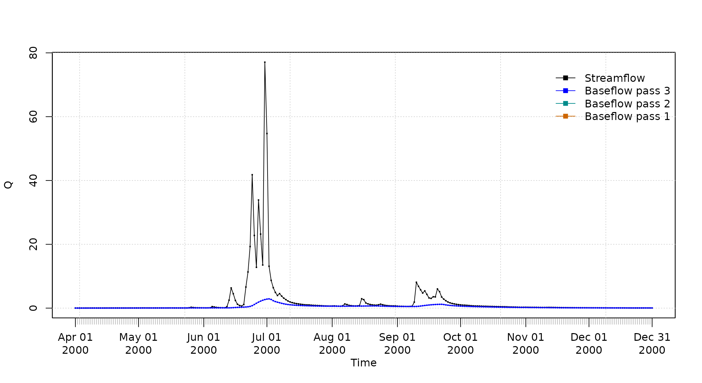
##
## 2000-04-01 0.01055530 0.01055530 0.01055530
## 2000-04-02 0.01132611 0.01132611 0.01058421
## 2000-04-03 0.01201829 0.01201829 0.01066581
## 2000-04-04 0.01269500 0.01269500 0.01079262
## 2000-04-05 0.01337825 0.01337825 0.01096092
## 2000-04-06 0.01418213 0.01418213 0.01117236
## [ reached 'max' / getOption("max.print") -- omitted 269 rows ]Software details
This tutorial was built under:
## [1] "x86_64-pc-linux-gnu"## [1] "R version 4.6.0 (2026-04-24)"## [1] "hydroTSM 0.8-1"Appendix
In order to make easier the use of for users not familiar with R, in this section a minimal set of information is provided to guide the user in the R world.
Editors, GUI
Multi-platform: Sublime Text (https://www.sublimetext.com/ ; RStudio (https://posit.co/)
GNU/Linux only: ESS (https://ess.r-project.org/)
Windows only : NppToR (https://sourceforge.net/projects/npptor/)
Importing data
?read.table,?write.table: allow the user to read/write a file (in table format) and create a data frame from it. Related functions are?read.csv,?write.csv,?read.csv2,?write.csv2.?zoo::read.zoo,?zoo::write.zoo: functions for reading and writing time series from/to text files, respectively.R Data Import/Export: https://CRAN.R-project.org/doc/manuals/r-release/R-data.html
foreign R package: read data stored in several R-external formats (dBase, Minitab, S, SAS, SPSS, Stata, Systat, Weka, …)
readxl R package: Import MS Excel files into R.
How to print more than one matrixplot in a single
Figure?
Because matrixplot is based on lattice graphs, normal
plotting commands included in base R does not work. Therefore, for
plotting ore than 1 matrixplot in a single figure, you need to save the
individual plots in an R object and then print them as you want.
In the following sequential lines of code, you can see two examples that show you how to plot two matrixplots in a single Figure:
library(hydroTSM)
data(SanMartinoPPts)
x <- window(SanMartinoPPts, end=as.Date("1960-12-31"))
m <- daily2monthly(x, FUN=sum, na.rm=TRUE)
M <- matrix(m, ncol=12, byrow=TRUE)
colnames(M) <- month.abb
rownames(M) <- unique(format(time(m), "%Y"))
p <- matrixplot(M, ColorRamp="Precipitation", main="Monthly precipitation,")
print(p, position=c(0, .6, 1, 1), more=TRUE)
print(p, position=c(0, 0, 1, .4))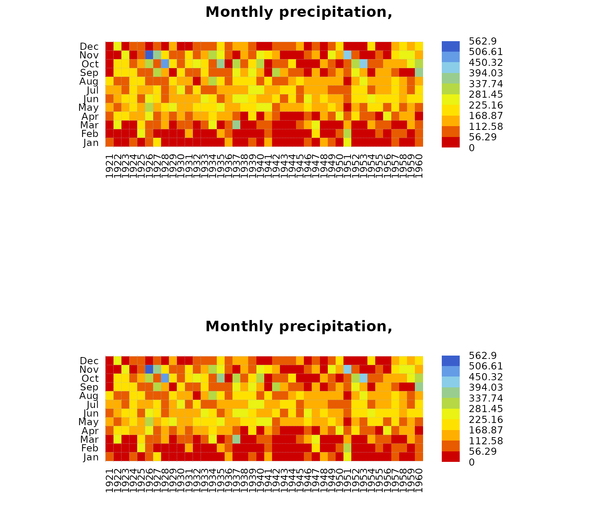
The second and easier way allows you to obtain the same previous
figure (not shown here), but you are required to install the
gridExtra package:
if (!require(gridExtra)) install.packages("gridExtra")## Loading required package: gridExtra## Loading required package: lattice
grid.arrange(p, p, nrow=2)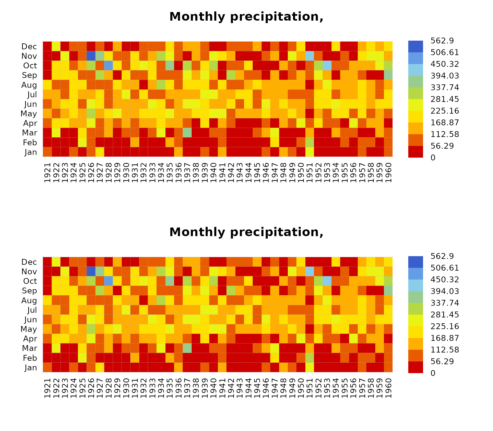